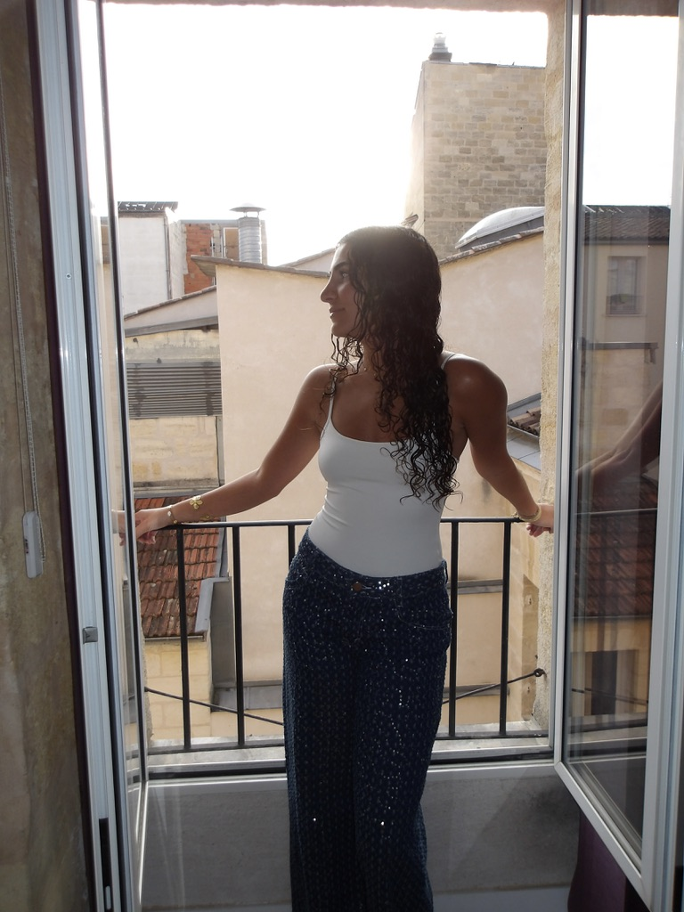
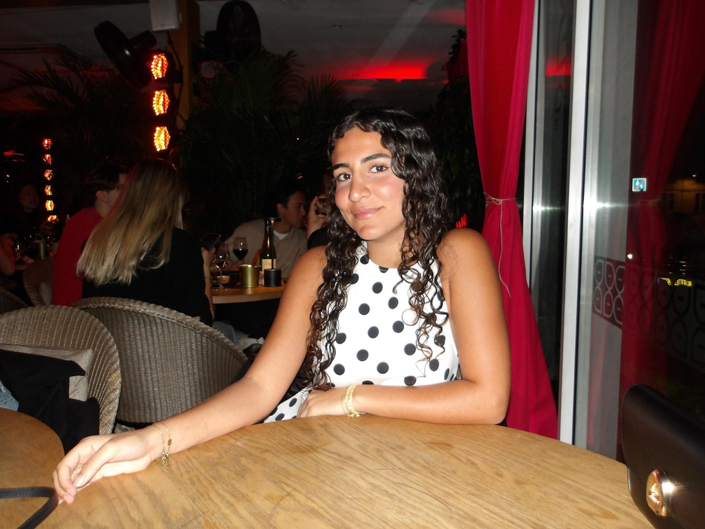
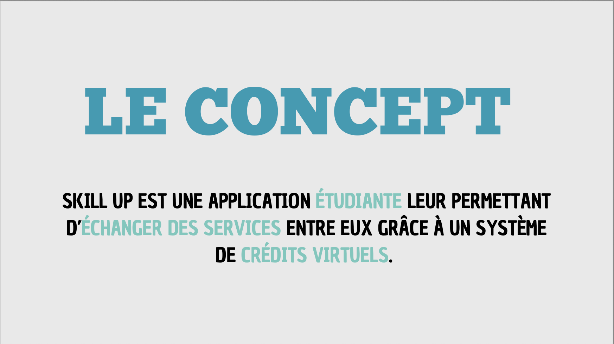
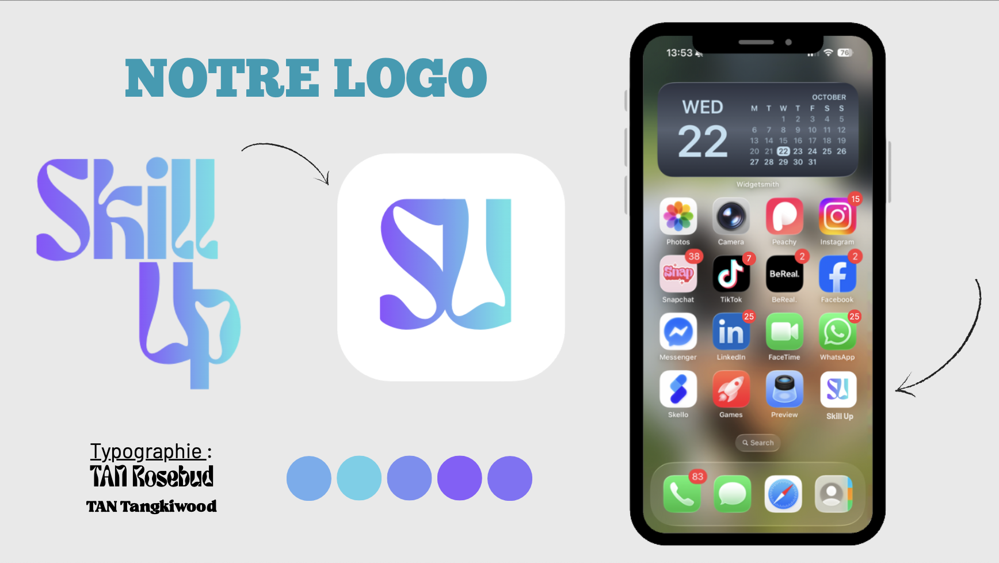
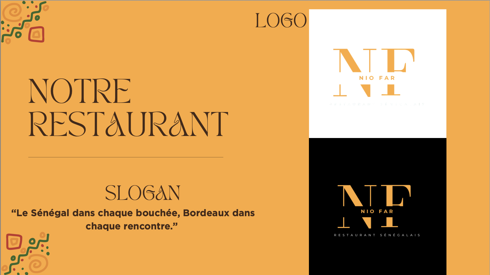
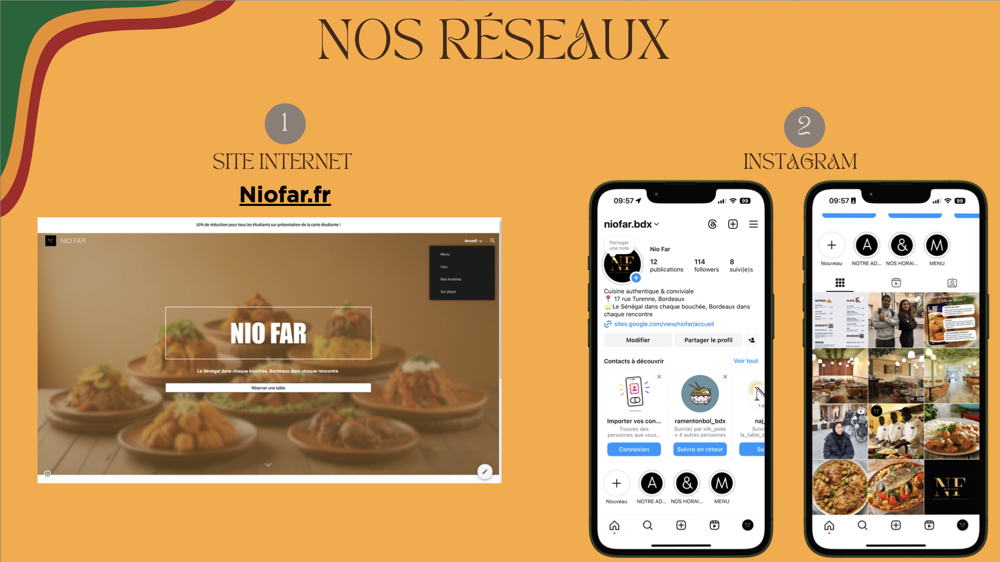
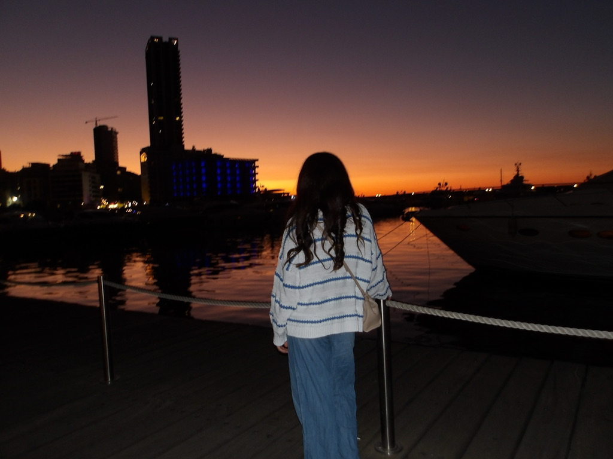

Étudiante en Communication
Stratégie digitale · Création de contenu · Storytelling de marque
Voir mes projets
Je m'appelle Maya Tarraf, étudiante en 2ème année à l'EFAP Bordeaux. Ce qui me motive dans la communication, c'est de créer du contenu que les gens ressentent vraiment — et pas seulement qu'ils voient.
Je m'intéresse particulièrement aux réseaux sociaux, à la création de contenu et au storytelling de marque. J'aime construire des idées en partant de zéro : imaginer un concept, façonner son identité et lui donner vie à travers des visuels et des expériences numériques.
De nature extravertie et curieuse, j'aime les environnements dynamiques, échanger des idées et les transformer en projets concrets.
Renforcer mes compétences en stratégie digitale
Contribuer à des projets de création de contenu concrets
Travailler au sein d'une équipe dynamique et créative
Acquérir une expérience pratique en communication de marque


Stratégie marketing · Identité de marque · Plan de lancement
Application étudiante développée en équipe, basée sur un système de crédits virtuels permettant l'échange de services entre pairs. Nous avons travaillé sur l'ensemble du projet : positionnement, business model, stratégie de communication et plan de lancement, du concept initial à la présentation finale.
Concept restaurant · Identité de marque · Communication
Création de toutes pièces d'un restaurant sénégalais fictif à Bordeaux. L'objectif était de développer le concept, l'identité de marque complète et une stratégie de communication globale, de l'analyse concurrentielle jusqu'aux supports visuels et aux réseaux sociaux.
"Le Sénégal dans chaque bouchée, Bordeaux dans chaque rencontre."


Gestion de la relation client, animation des réseaux sociaux, création de contenu et montage vidéo pour la valorisation des biens, rédaction de descriptions et stratégie digitale.
Gestion des réseaux sociaux, contribution à l'organisation d'événements, rédaction de supports de communication. Note de stage : 17/20
Conception et dessin d'aménagement intérieur, conseil client. Note de stage : 19/20
Suivi des règlements clients, recouvrement, élaboration des factures.
Relations presse, techniques rédactionnelles, stratégie digitale, événementiel.
Mathématiques : 17/20 · Anglais du Monde Contemporain : 20/20
Ramassage de déchets dans la mer de la Corniche de Dakar avec un club de plongée
Distribution de nourriture aux sans-abris dans le cadre associatif
Plantation de mangroves vers Guéréo avec l'école
Création de Creakidz, une mini-entreprise proposant des activités pour enfants en bas âge

Je recherche un stage de 5 mois à partir de septembre 2026.
N'hésitez pas à me contacter !